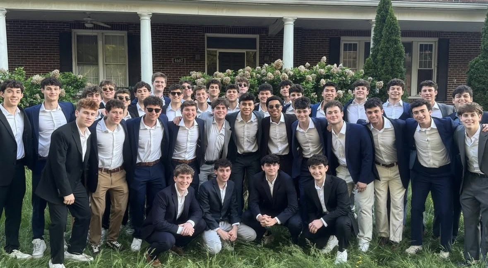

Every semester, fraternities and sororities across the country welcome thousands of students into a new community, one bonded by friendship, networking opportunities, and campus involvement – but with that involvement comes a steep financial commitment that costs students and their families thousands of dollars each year.
The University of Maryland recognizes over 50 greek life organizations across the Interfraternity Council (IFC), Panhellenic Association (PHA), Multicultural Greek Council (MGC) and National Pan-Hellenic Council (NPHC). Over 6,000 students – around 16% of undergraduates – participate in greek life on campus.
A map of College Park's Oldtown neighborhood and fraternity row, two areas that hold the vast majority of greek life houses | Google Maps
For many students, however, the experience is shaped more by natural fit than the price.
Maddi Miller, a sophomore in Kappa Delta who went through recruitment last year, said she was only focused on finding the best place for her. “I knew wherever I went it was going to be expensive. I was mainly paying attention to where I felt the happiest,” Miller said.
Julia Hacker, a sophomore in Delta Delta Delta shared a similar sentiment. “It didn’t get in the way of my overall decision of the sorority I wanted to be in,” she said referring to finances.

Miller and Hacker both have their expenses covered by their parents, a contrast from Justin Haberman, a newly initiated freshman into a fraternity this spring.
Haberman is covering his own dues this semester, totaling around $1,300, though he says it didn’t impact his decision. “Cost wasn’t a concern that I had. I had multiple conversations with my family regarding all aspects of joining greek life and it was not an issue.”
Beyond the dues, students say the price of greek life extends into other expenses that may not come to mind during the recruitment process.
For Haberman, a recent frat-wide weekend trip to Virginia Beach cost him nearly $500 between his share of the house booking and the bus that transported the freshmen nearly five hours to the coast.
Moving into his frat house next year will also bring a new rent expense, as well as an additional meal that covers all the members living in the house.
Both Miller and Hacker also mentioned additional fees as a part of living in their chapter houses this year, including additional payments to access certain common areas of the house, and parking.
Hacker also mentioned how specific events, both on and off campus often require a ticket to get in, from club outings in D.C. to philanthropy events in College Park.
While these additional expenses add up, the main expense lies in the semester dues. These dues pay for a list of things, according to Tau Epsilon Phi treasurer Adam Weisensel.
“National dues were over $30,000 this semester, and then brotherhood, social, and philanthropy events” all add into the equation, Weisensel said. “Costs that aren’t included in dues are transportation for events and away weekend, and rent and the meal plan for people in the house,” he added.

Weisensel mentioned how he figures that most know where some of their money goes, but they probably don’t understand exactly how much goes to national and IFC dues.
Still, Miller, Hacker and Haberman all said the price is secondary. To each, the final question I asked was whether they believe it’s all worthwhile.
“Yes, I’m extremely happy,” said Miller.
“For me, 100%,” Hacker answered.
“You make friends for life that you can call your brothers,” Haberman noted.
Even with the expenses, all three are happy with their decisions, and experiences.